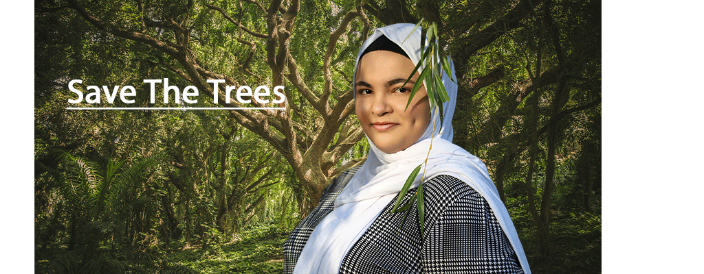

Yusra Khazaleh is a senior at Syracuse University. She’s always had a love for reading, writing, and exploring how technology shapes communication, which is what led her to these fields.
When she’s not studying, Yusra enjoys being outside. She’s a nature lover who spends her free time exploring the outdoors. She’s also passionate about tennis and plays regularly.
Whether she’s diving into a new book, working on a tech project, or playing tennis, Yusra loves staying active and engaged in both her studies and hobbies.